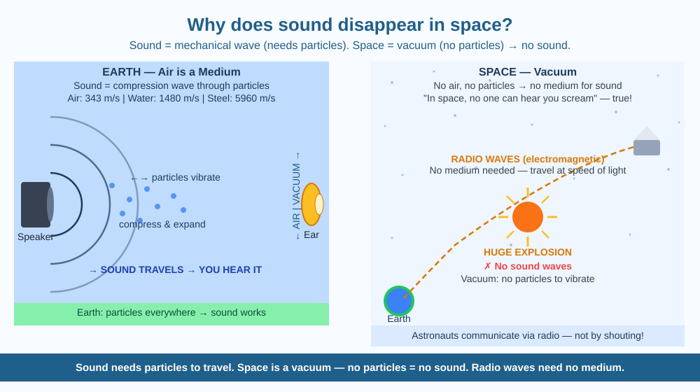

By the end of this lesson, you should be able to explain why sound cannot travel through space, describe what a mechanical wave is and what it needs to travel, and predict which communication method would work between two astronauts floating outside a spacecraft.
Explosion scenes in space-themed movies are always accompanied by enormous roaring sound effects. Yet NASA astronauts report that space outside a spacecraft is completely, eerily silent — even when rocket engines are firing just metres away. Why do those movies lie? What is different about space that makes sound impossible?
The answer lies in understanding what sound actually is.
Sound is a mechanical wave. When you speak or clap your hands, you set air molecules vibrating. Those molecules bump into the ones next to them, which bump into the next ones, and so on — creating a chain of compressions (high-pressure zones) and rarefactions (low-pressure zones) that travels outward from the source. This travelling pattern of particle vibration is a sound wave.
The critical point: sound can only travel if there are particles to vibrate and pass the energy along. This is why sound is called a mechanical wave — it depends on a mechanical medium (a material of particles) to travel.
Sound in different materials: - In air (~343 m/s at 20°C): air molecules transmit the vibration - In water (~1,480 m/s): water molecules transmit faster because they are closer together - In steel (~5,960 m/s): very fast, as atoms are tightly packed and strongly bonded
Space is a vacuum. Beyond Earth's atmosphere, space contains essentially no particles. The density of space is about 10 million times less than the density of air at Earth's surface — effectively zero. With no particles, there is nothing to vibrate and no way to pass the energy from one point to another. Sound simply cannot exist.
This does not mean nothing travels through space. Light, radio waves, X-rays, and other electromagnetic waves travel through space at 300,000 km/s — they do not need particles because they are self-propagating oscillations of electric and magnetic fields.
How astronauts communicate: Inside the ISS, astronauts breathe air, so they can speak normally — the spacecraft contains a medium. Outside, during spacewalks, they use radio communication — radio waves travel through the vacuum with no problem and are picked up by receivers in their helmets.
Think of sound like a "Mexican wave" in a cricket stadium. The wave travels around the stadium only because people (particles) pass the action to their neighbours. In an empty stadium with no people, the "wave" cannot travel — there is no one to do the passing.
Space is an empty stadium. No matter how large the explosion, there are no "people" (particles) to pass the vibration along.
The included SVG shows a split comparison:

Sound travels slower in warm air than in cold air — because warmer molecules have more energy and move around faster, disrupting the orderly passing of the pressure wave. Actually, the opposite is true: sound travels faster in warm air. This is because the speed of sound depends on the square root of temperature — warmer air molecules move faster and pass vibrations more quickly.
This creates an interesting effect: sounds near a hot road surface refract (bend) away from the road, while sounds near a cold surface (like over snow) can bend back down toward the ground — making distant sounds unusually clear on cold winter nights.
Predict: You are standing in a desert where the ground is very hot but the air high above is cool. A person 200 metres away whispers. Would you expect to hear them better on a cold winter morning or on a hot desert afternoon? Give a reason using the speed-of-sound principle.
What is the main reason sound cannot travel through space?
Why is understanding that sound needs a medium more useful than just knowing sound cannot travel in space?
If astronauts in space suits needed to communicate, what would you predict would work and what would not?
Explain to a younger student why space explosion sounds in movies are wrong, without using the words "mechanical," "vacuum," or "wave." Then explain it correctly using all three terms. Both explanations should identify what sound needs to travel and why space lacks it.
Space is not completely empty — it contains a very thin gas of about 1 atom per cubic centimetre in the interstellar medium (between stars). In theory, sound can travel through this, but at a frequency so low (about 10 million years per cycle) that no human ear or instrument could detect it. Scientists discovered that the black hole at the centre of the Perseus galaxy cluster is generating actual sound waves — pressure oscillations in hot gas — at a frequency 57 octaves below middle C. These are the lowest notes ever detected in the universe.
Sound needs particles to travel — space is a vacuum with none. Radio waves are electromagnetic and need no medium, which is why they work; voice through vacuum does not.